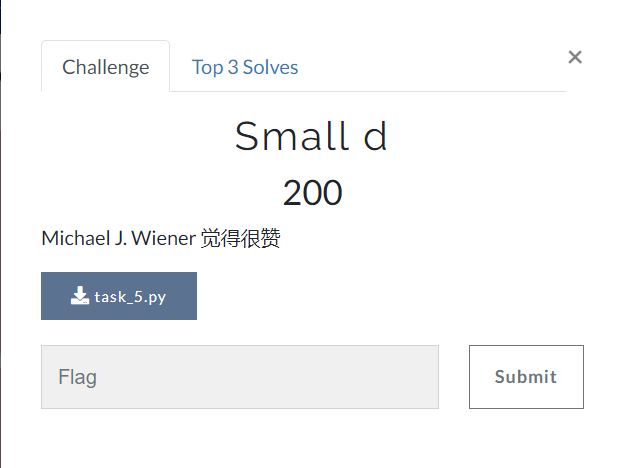
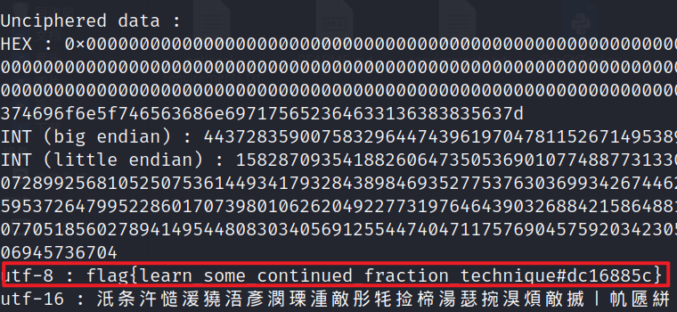

# BUUCTF - Crypto babyrsa task_4
题目如下：
from Crypto.Util.number import * | |
from flag import flag | |
def gen_prime(n): | |
res = 1 | |
for i in range(15): | |
res *= getPrime(n) | |
return res | |
if __name__ == '__main__': | |
n = gen_prime(32) | |
e = 65537 | |
m = bytes_to_long(flag) | |
c = pow(m,e,n) | |
print(n) | |
print(c) | |
# 17290066070594979571009663381214201320459569851358502368651245514213538229969915658064992558167323586895088933922835353804055772638980251328261 | |
# 14322038433761655404678393568158537849783589481463521075694802654611048898878605144663750410655734675423328256213114422929994037240752995363595 |
利用在线网站可以将所给的 n 分解素数为以下 15 个：
2217990919
2338725373
2370292207
2463878387
2706073949
2794985117
2804303069
2923072267
2970591037
3207148519
3654864131
3831680819
3939901243
4093178561
4278428893
公钥如上
n = 以上公钥相乘
phi = 17290065983330319066216184030777067976382697670733255200004943703459332462321021486252411405242719735544959857825124088104221030960082400051200
e = 65537
d * e mod phi = 1 即 由相关数学概念可知，d 是 e 的逆元，标记为 ,
利用 扩展欧几里得算法 和 求解逆元算法
def extended_gcd(a, b): | |
if b == 0: | |
return a, 1, 0 | |
gcd, x, y = extended_gcd(b, a % b) | |
return gcd, y, x - (a // b) * y | |
def inverse_modulo(x, p): | |
gcd, inverse, _ = extended_gcd(x, p) | |
if gcd != 1: | |
raise ValueError("The inverse does not exist.") | |
return inverse % p |
代码如下：
def extended_gcd(a, b): | |
if b == 0: | |
return a, 1, 0 | |
gcd, x, y = extended_gcd(b, a % b) | |
return gcd, y, x - (a // b) * y | |
def inverse_modulo(x, p): | |
gcd, inverse, _ = extended_gcd(x, p) | |
if gcd != 1: | |
raise ValueError("The inverse does not exist.") | |
return inverse % p | |
def fastExpMod(b, e, m): #快速幂 | |
result = 1 | |
while e != 0: | |
if (e&1) == 1: | |
# ei = 1, then mul | |
result = (result * b) % m | |
e >>= 1 | |
# b, b^2, b^4, b^8, ... , b^(2^n) | |
b = (b*b) % m | |
return result | |
n1 = 2217990919 | |
n2 = 2338725373 | |
n3 = 2370292207 | |
n4 = 2463878387 | |
n5 = 2706073949 | |
n6 = 2794985117 | |
n7 = 2804303069 | |
n8 = 2923072267 | |
n9 = 2970591037 | |
n10 = 3207148519 | |
n11 = 3654864131 | |
n12 = 3831680819 | |
n13 = 3939901243 | |
n14 = 4093178561 | |
n15 = 4278428893 | |
phi = (n1-1)*(n2-1)*(n3-1)*(n4-1)*(n5-1)*(n6-1)*(n7-1)*(n8-1)*(n9-1)*(n10-1)*(n11-1)*(n12-1)*(n13-1)*(n14-1)*(n15-1) | |
e = 65537 | |
d = inverse_modulo(e, phi) | |
print(f"The inverse of {e} modulo {phi} is {inverse}.") | |
n = 17290066070594979571009663381214201320459569851358502368651245514213538229969915658064992558167323586895088933922835353804055772638980251328261 | |
c = 14322038433761655404678393568158537849783589481463521075694802654611048898878605144663750410655734675423328256213114422929994037240752995363595 | |
m = fastExpMod(c,d,n) | |
print(long_to_bytes(m)) |
flag 为： flag{us4_s1ge_t0_cal_phI}
# BUUCTF - Crypto small d task_5
原题目如下：

from secret import flag | |
from Crypto.Util.number import * | |
p = getPrime(1024) | |
q = getPrime(1024) | |
d = getPrime(32) | |
e = inverse(d, (p-1)*(q-1)) | |
n = p*q | |
m = bytes_to_long(flag) | |
c = pow(m,e,n) | |
print(c) | |
print(e) | |
print(n) | |
# c = 6755916696778185952300108824880341673727005249517850628424982499865744864158808968764135637141068930913626093598728925195859592078242679206690525678584698906782028671968557701271591419982370839581872779561897896707128815668722609285484978303216863236997021197576337940204757331749701872808443246927772977500576853559531421931943600185923610329322219591977644573509755483679059951426686170296018798771243136530651597181988040668586240449099412301454312937065604961224359235038190145852108473520413909014198600434679037524165523422401364208450631557380207996597981309168360160658308982745545442756884931141501387954248 | |
# e = 8614531087131806536072176126608505396485998912193090420094510792595101158240453985055053653848556325011409922394711124558383619830290017950912353027270400567568622816245822324422993074690183971093882640779808546479195604743230137113293752897968332220989640710311998150108315298333817030634179487075421403617790823560886688860928133117536724977888683732478708628314857313700596522339509581915323452695136877802816003353853220986492007970183551041303875958750496892867954477510966708935358534322867404860267180294538231734184176727805289746004999969923736528783436876728104351783351879340959568183101515294393048651825 | |
# n = 19873634983456087520110552277450497529248494581902299327237268030756398057752510103012336452522030173329321726779935832106030157682672262548076895370443461558851584951681093787821035488952691034250115440441807557595256984719995983158595843451037546929918777883675020571945533922321514120075488490479009468943286990002735169371404973284096869826357659027627815888558391520276866122370551115223282637855894202170474955274129276356625364663165723431215981184996513023372433862053624792195361271141451880123090158644095287045862204954829998614717677163841391272754122687961264723993880239407106030370047794145123292991433 |
从题目可以看出，其名称为 Small d，并给出了一个人名 **Michael J. Wiener**，该攻击针对 RSA，当 d 很小时，攻击使用连分数法来暴露私钥 d。
我们直接用 rsactftool 脚本跑
https://github.com/RsaCtfTool/RsaCtfTool
python3 RsaCtfTool.py -n 19873634983456087520110552277450497529248494581902299327237268030756398057752510103012336452522030173329321726779935832106030157682672262548076895370443461558851584951681093787821035488952691034250115440441807557595256984719995983158595843451037546929918777883675020571945533922321514120075488490479009468943286990002735169371404973284096869826357659027627815888558391520276866122370551115223282637855894202170474955274129276356625364663165723431215981184996513023372433862053624792195361271141451880123090158644095287045862204954829998614717677163841391272754122687961264723993880239407106030370047794145123292991433 -e 8614531087131806536072176126608505396485998912193090420094510792595101158240453985055053653848556325011409922394711124558383619830290017950912353027270400567568622816245822324422993074690183971093882640779808546479195604743230137113293752897968332220989640710311998150108315298333817030634179487075421403617790823560886688860928133117536724977888683732478708628314857313700596522339509581915323452695136877802816003353853220986492007970183551041303875958750496892867954477510966708935358534322867404860267180294538231734184176727805289746004999969923736528783436876728104351783351879340959568183101515294393048651825 --uncipher 6755916696778185952300108824880341673727005249517850628424982499865744864158808968764135637141068930913626093598728925195859592078242679206690525678584698906782028671968557701271591419982370839581872779561897896707128815668722609285484978303216863236997021197576337940204757331749701872808443246927772977500576853559531421931943600185923610329322219591977644573509755483679059951426686170296018798771243136530651597181988040668586240449099412301454312937065604961224359235038190145852108473520413909014198600434679037524165523422401364208450631557380207996597981309168360160658308982745545442756884931141501387954248 --attack wiener
得出以下内容：

所以 flag 为： flag{learn_some_continued_fraction_technique#dc16885c}
# BUUCTF - Crypto babyxor task_3 简单的异或
题目：
from secret import * | |
ciphertext = [] | |
for f in flag: | |
ciphertext.append(f ^ key) | |
print(bytes(ciphertext).hex()) | |
# e9e3eee8f4f7bffdd0bebad0fcf6e2e2bcfbfdf6d0eee1ebd0eabbf5f6aeaeaeaeaeaef2 |
利用在线转换工具将十六进制转换为二进制，得到前 5 个字符的二进制为：
11101001 11100011 11101110 11101000 11110100
我们可以猜测 前五个字母应该是 flag {，利用 ASCII 转二进制可以知道为：
01100110 01101100 01100001 01100111 01111011
异或：
10001111 10001111
可以知道异或密钥为 10001111。然后先利用 16 进制转 2 进制网站，将密文转换为 2 进制；再利用异或在线解密将密文转换为明文；最后用 2 进制转换为 ASCII 码，得到正确答案，flag： flag{x0r_15_symm3try_and_e4zy!!!!!!}
# BUUCTF - Crypto babyencoding task_3.txt
题目如下所示：
part 1 of flag: ZmxhZ3tkYXp6bGluZ19lbmNvZGluZyM0ZTBhZDQ=
part 2 of flag: MYYGGYJQHBSDCZJRMQYGMMJQMMYGGN3BMZSTIMRSMZSWCNY=
part 3 of flag: =8S4U,3DR8SDY,C`S-F5F-C(S,S<R-C`Q9F8S87T`
第一行就是 Base64 编码，解码得到：
flag{dazzling_encoding#4e0ad4
第二行使用 Base64 编码解码得到乱码：
1? ?P ? ?Q1 0?P0? ??1?? ?R1?? ?
尝试使用 Base32 工具解码得到：
f0ca08d1e1d0f10c0c7afe422fea7
第三行应该是 UUencode，解码后得到：
c55192c992036ef623372601ff3a}
把答案拼起来试试：
flag{dazzling_encoding#4e0ad4f0ca08d1e1d0f10c0c7afe422fea7c55192c992036ef623372601ff3a}
结果正确。
# BUUCTF - Crypto Affine task_2 Caesar with multiplication
题目如下：
from flag import flag, key | |
modulus = 256 | |
ciphertext = [] | |
for f in flag: | |
ciphertext.append((key[0]*f + key[1]) % modulus) | |
print(bytes(ciphertext).hex()) | |
# dd4388ee428bdddd5865cc66aa5887ffcca966109c66edcca920667a88312064 |
该题目为 仿射 ，提示是 凯撒和乘法
先将密文前五位 16 进制转为 10 进制：
221 67 136 238 66
根据 modulus 为 256，判断密文应该是对应的 扩展的 ASCII 码。前五位字符原先应该是 flag{ ，其所对应的十进制数为：
102 108 97 103 123
进行暴力破解，我们知道 k0 的逆元 和 k1 的值一定不会大于 256：
modulus = 256 | |
x = [221,67,136,238,66] #密文 | |
y = [102,108,97,103,123] | |
for k0 in range(1,257): | |
for k1 in range(1,257): | |
y_ = [] | |
for i in range(len(x)): | |
y_.append((k0*( x[i] - k1)) % modulus) | |
if y_ == y: | |
print('k0为:',k0) | |
print('k1为:', k1) | |
print('y_为',y_) | |
break |
破解结果为：
k0的逆元 为: 241
k1为: 23
利用求逆元函数得到，k0 为 17 （没有什么用了）
根据密文转化为 10 进制数带入上述式子，得到明文 10 进制数为：
[102, 108, 97, 103, 123, 52, 102, 102, 49, 110, 101, 95, 99, 49, 112, 104, 101, 114, 95, 105, 53, 95, 118, 101, 114, 121, 95, 51, 97, 122, 121, 125]
再将其转化为 ASCII 码得到 flag： flag{4ff1ne_c1pher_i5_very_3azy}
# BUUCTF - Crypto babyaes task_1 了解下 aes 是什么
题目如下：
from Crypto.Cipher import AES | |
import os | |
from flag import flag | |
from Crypto.Util.number import * | |
def pad(data): | |
return data + b"".join([b'\x00' for _ in range(0, 16 - len(data))]) | |
def main(): | |
flag_ = pad(flag) | |
key = os.urandom(16) * 2 | |
iv = os.urandom(16) | |
print(bytes_to_long(key) ^ bytes_to_long(iv) ^ 1) | |
aes = AES.new(key, AES.MODE_CBC, iv) | |
enc_flag = aes.encrypt(flag_) | |
print(enc_flag) | |
if __name__ == "__main__": | |
main() | |
# 3657491768215750635844958060963805125333761387746954618540958489914964573229 | |
# b'>]\xc1\xe5\x82/\x02\x7ft\xf1B\x8d\n\xc1\x95i' |
该题目为 AES 加密，使用了一个密钥 key 和初始化向量 iv，选择的 CBC 模式加密。
先分析一下题目中的几个关键函数和方法：
urandom:
语法 os.urandom（size）
参数：
size:字符串随机字节的大小
返回值：该方法返回一个字符串，该字符串表示适合加密使用的随机字节。
例 os.urandom(1)
输出：b'\x91'
二进制：10010001 （8bits）
AES.new(key, mode, *args, **kwargs)
param key(参数密钥):
在对称密码中使用的秘密密钥。
它必须为16、24或32个字节长（分别用于AES-128， AES-192或AES-256）。
mode（模式）
模式（支持的MODE_*常量之一）–用于加密或解密的链接模式。
学习链接：https://pycryptodome.readthedocs.io/en/latest/src/cipher/aes.html
Keyword Arguments（关键字参数）：
IV（字节，字节组，memoryview） - （只适用于MODE_CBC，MODE_CFB，MODE_OFB，和MODE_OPENPGP模式）。
用于加密或解密的初始化向量。
对于MODE_CBC，MODE_CFB和MODE_OFB它必须是16个字节。
解题思路：
解密 flag 我们需要获取到 key 和 iv 的值，由条件：
key=os.urandom(16)*2
iv=os.urandom(16)
可知：key 是 32bytes,256bits ；iv 是 16bytes ,128bits
key^iv ，那么只有 iv 与 key 的低 128 位相异或，所以 key 的高 128 位是固定不变的。所以输出结果的高 128bits, 就是 key 的高 128bits, 进而可以得到 key 的所有值 256bits。之后 key 的低 128bits，与输出结果的低 128bits 相异或，所得结果就是 iv 的值了。key,iv 得到后直接 aes.decrypt () 解密就 ok 了。
代码如下：
from Crypto.Cipher import AES | |
import os | |
from gmpy2 import* | |
from Crypto.Util.number import* | |
xor = 3657491768215750635844958060963805125333761387746954618540958489914964573229 | |
enc_flag = b'>]\xc1\xe5\x82/\x02\x7ft\xf1B\x8d\n\xc1\x95i' | |
out = long_to_bytes(xor) | |
key = out[:16]*2 | |
print('key为:',key) | |
iv = bytes_to_long(key[16:])^bytes_to_long(out[16:]) | |
# print(iv) | |
iv = long_to_bytes(iv) | |
print('iv为:',iv) | |
aes = AES.new(key,AES.MODE_CBC,iv) | |
flag = aes.decrypt(enc_flag) | |
print(flag) |
运行后得到： b'firsT_cry_Aes\x00\x00\x01' ，其中 firsT_cry_Aes 是我们需要的内容，其余部分只是填充使字符串长度达到 16。所以最终的 flag 为 flag{firsT_cry_Aes}